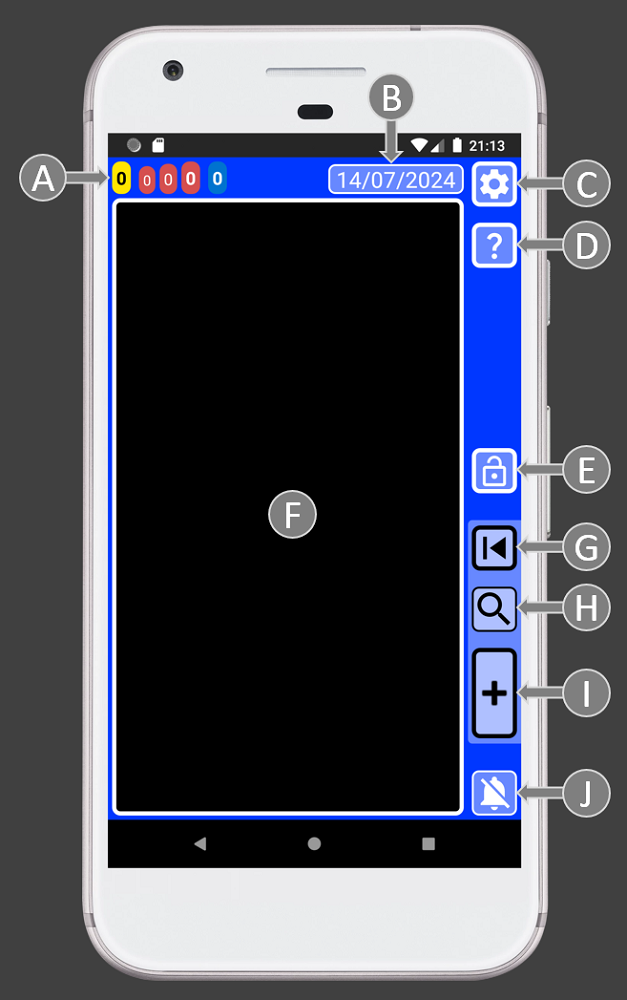

This software, designed with flexibility in mind, empowers you to track your past activities and organize future plans. Rather than constantly worrying about staying on top of everything, you’ll have a reliable private assistant that not only reminds you of what’s important but also assists in scheduling your day. This frees your mind, allowing you to fully enjoy life.
SECURElogBook prioritizes two key aspects: data management and security. It has been meticulously crafted for fast and straightforward data entry, all while ensuring it operates offline and doesn’t access your files.
I have been working on this project for more than 4 years. I have dedicated my savings and 100% of my time on this project for the last 2 years. As a result, SECURElogBook has evolved into a high-quality, multifunctional tool.
Despite its user-friendly design, some people that are currently testing SECURElogBook haven’t fully grasped the potential behind idea. That is normal, because I designed SECURElogBook as a powerful flexible tool. That means, that the more you know and the more information you add to the program the more it will give you back.
Allow me to explain what SECURElogBook is.
SECURElogBook was designed as a powerful versatile data tool.
To make this idea possible, I’ve invested a lot of time time. Also, I needed to create the technology to make it possible:
1. Timeline records system that allows the program to work like we do. People and SECURElogBook store information in a timeline. That allows you to remember everything you add to the program.
2. Robust records handling system to make clear and easy to add, see, edit and search your information.
3. Time/complete colour code system to make possible to store important information in a visible language that everyone can understand.
4. Task counters system that allows to predict your workload. Also it adds extra meaning to your list data. as task counters are related to the records.
5. System to remember everything thanks to how SECURElogBook has been designed.
6. Quality of life and details to make everything logic, easy, fast while minimizing mistakes. SECURElogBook design minimizes the time required to input information so you will not hesitate to add your ideas, shopping lists, reminders, alarms, ...
7. Relative times values to fully control time, no more wasted time trying to understand your information. SECURElogBook gives you dynamically all you need.
8. Dynamic lists for when you need something that cannot be described as a single record. This allows to create shopping lists, recipes, quick manuals, ...
9. SECURITY and PRIVACY to have the peace of mind that your data is yours.
10. Powerful search system that allows you to find everything, or group information to allow you to draw conclusions and improve every day.
When you combine all those systems in one program, like SECURElogBook does, you can do:
1. Alarms.
2. Screen time tracker.
3. Diet tracker.
4. Reminders.
5. Shopping list app.
6. Money tracker.
7. Medication intake log.
8. Calendar.
9. Personal motivator.
10. Fitness tracker.
11. Mental health diary.
12. Personal organiser.
13. Tool for remembering everything.
14. Habit tracker.
15. Schedule your work.
16. Tool for improvement, as you can analyse your data with the search system and learn from it.
17. Personal diary.
And much more!
Thanks to SECURElogBook design everything is secure, easy, straightforward, and fast. Thanks to the smart design you won’t hesitate to add what’s important to you.
Once it’s inside SECURElogBook, you won’t forget it.
The app for everything, right at your fingertips!
1. Timeline and records
We are constantly doing something. We can either plan for future actions or act immediately. However, as time passes, everything transitions into the past. Thus, everything we do is encapsulated within our timeline.SECURElogBook is a program that is able to record information in the same timeline:
Everything we do or plan happens always on a specific day and time:
These tasks, ideas, alarms, reminders, and more can be seen as records contained into our life’s timeline.
2. Robust records handling system
Now we know that SECURElogBook is able to store information like us, inside of a timeline.How we can handle the information so it is fast and easy to introduce.
I have created a solid simple system to manage information using dedicated windows:
Basically, I created a structure with 3 windows:
. Creator (green) to introduce new information into the system.
. Main window (blue) to allow see and search your information.
. Editor (green) to be able to change information of a record once you tap on it in the main window (blue)
Main window (blue)
The main window, with a blue background, allows you to see and search information:

A = Task counters. Allow to see the missing alarms/tasks and workload for today and tomorrow.
B = Date button. This will move the main list to the next yellow record or the present time.
C = Settings. Access to: security PIN, audio settings, date format, delete system, import/export system and about window.
D = Help. Documentation for this window.
E = App lock button.
F = List of records. Here you can find all your data. Tap on a record to edit it.
G = Last record. This button opens last record that you saved or copied.
H = Search. It will allow to find what you are looking for and group information to draw conclusions from your data.
I = Add record. It opens the green record creator window.
J = Stop alarm button.
Creator window (green)
This window has all you need to create a record or records as you can do duplicates.
Once the creator window is open the record is set to not completed by default and the time is always set to the current time, past. That is why we see a yellow text box and buttons.
It’s crucial to understand that the list will display records that match or follow the moment of the record we are creating (D and F). Additionally, altering the time (D) or date (F) values will dynamically update the list (K).

A = Time seeker buttons. Up, to select previous record time. Down, to select next record time. These buttons even the time of the current record with an existing one. Once both records are at the same time you can add or remove time to perfectly control when the new record will be triggered.
B = Record text.
C = Update time button. It will set our record with the current time.
D = Time values. To set the hours and minutes of your record.
E = Add time windows. This button has two actions:
TAP = Window with preset values that you can customise.

HOLD = Window that allows to add or remove time and date values.

F = Calendar. It will open the calendar to allow to select a date.
G = Favourites. This will open a menu that you can customise with the things you do regularly so instead of writing you will be able to select your things from a list.
H = Save button.
I = Complete button. Use it to indicate if the record is completed (dark background) or not completed (yellow background on past or blue on the future).
J = Copy button. This will create a copy of the record. Remember that copy and save buttons will become red when there is already a record using that exact time.
K = List of records. Here you can find all your data. Hold on a record to edit it.
L = Help. Documentation for this window.
M = Stop alarm button.
Editor window (teal)
The editor window will allow you to change your records and also create lists by pressing the button with a "L" (for list).
Like with the creator window (green background), it’s crucial to understand that the list will display records that match or follow the moment of the record we selected (D and F). Additionally, altering the time (D) or date (F) values will dynamically update the list (K).

A = Time seeker buttons. Up, to select previous record time. Down, to select next record time. These buttons even the time of the current record with an existing one. Once both records are at the same time you can add or remove time to perfectly control when the new record will be triggered.
B = Record text.
C = Update/Restore time button. This button has two actions: TAP = It will set our record with the current time, HOLD = It will restore the record’s values (text, time and date).
D = Time values. To set the hours and minutes of your record.
E = Add time windows. This button has two actions:
TAP = Window with preset values that you can customise.
HOLD = Window that allows to add or remove time and date values.
F = Calendar. It will open the calendar to allow to select a date.
G = Favourites. This will open a menu that you can customise with the things you do regularly so instead of writing you will be able to select your things from a list.
H = Clear record text button.
I = Save button.
J = Complete button. Use it to indicate if the record is completed (dark background) or not completed (yellow background on past or blue on the future).
K = List(L)/Copy(C) button. This button will change its behaviour depending on the record time:
LIST: If we do not change the record time, we can press the list button “L” to add an item and create a list.
COPY: If we change the record time, the button will change to “C” to allow to create a copy the record. This feature is particularly handy for setting up advance alerts for important reminders.
L = Delete record button. Use it to delete the current record. Be aware there is a powerful delete system inside the settings button on the main window (blue).
M = List of records. Here you can find all your data. Hold on a record to edit it.
N = Help. Documentation for this window.
O = Stop alarm button.
3. Time/complete colour code system
OK, SECURElogBook allows you to record information like we do. We store things in the past or in the future inside our timeline. But we also remember if we completed something or not.SECURElogBook, like you, can also record if we did or not something. To indicate whether you’ve completed something or not, there is a button to toggle between "not completed" and "completed":

Imagine having a list of everything you’ve done and everything you plan to do right in front of you.
Having all that information in a small screen will mean small text, a lot of written information, … that will create a very bad user experience.
Colours can serve as a layer of information to simplify understanding. By condensing completion status and whether a record belongs to the past or future into a single colour, it’s like when we interpret green or red lights in a traffic signal.
SECURElogBook system transforms the past/future and no completed/completed information into colours, making things faster and easier:
. Past:
Completed
. Future:
Completed
The colour code system automatically makes less important records less visible while highlighting important ones:
. Dark: Completed records.
. Yellow: Missing records, that you must review as soon as possible.
. Blue: Future records.
Thanks to the colour code system, instead of checking the current time and comparing it with the record time, you can simply glance at the colour to determine if a record is completed or not, and whether it’s in the future or the past.
The colour code system ensures that even with thousands of records in your SECURElogBook, you can quickly identify what requires your attention. Bright colours naturally draw our focus, which is why missing tasks or alarms are highlighted in yellow, while future tasks are represented in bright blue.
This picture represents the same data at different times. The colour code system highlights automatically the important information:
These two phones, in the image above, show the same information at different times.
The dynamic colour change helps you to see where the important records are, yellows and first blues. The present is always where records change from black or yellow to blue.
No matter how many records you have, understanding the information is very easy once you understand the colour code system:
. Dark = Not important.
. Blue = Future records.
. Yellow = Very important records that you must review.
The colour code system also prevents mistakes. For example, if you want to set an alarm to wake up tomorrow, your record should be blue, since yellow and black records belong to the past. Also notice that
4. Task counters system
SECURElogBook store all the tasks, alarms, records, reminders, lists, ideas, … everything in an infinite list of records.
While an infinite list with all your data could look like a great idea, it quickly becomes overwhelming without a system in place to provide context to help you to understand the data.
Essentially, the task counters in SECURElogBook provide crucial information through a simple, visually intuitive representation that combines colours, numbers, time, and sizes:

Past missed records (A), today (B) and tomorrow (C).
Basically, these values on the top left corner of SECURElogBook, display the number of:
. Yellow: Missing records.
. Red (first): Records in less than 1h (records with short red bar).
. Red (second): Records after 1h and 8h. (records with half red bar).
. Red (third): Total active records for today.
. Blue: Records for tomorrow.
Now you know how the task counters system works, scheduling your day becomes easier. In no time, you’ll be able to assess how many tasks you can handle. With SECURElogBook, you can strategically allocate tasks, especially on busy days.
If our task counter shows these values [1 113 1] that means:
. Yellow = 1 missing thing I must review as soon as possible.
. Red (first) = I have 1 thing to do in less than 1h (record with short red bar).
. Red (second) = There is 1 something I need to do after 1h and in less than 8h. (record with half red bar).
. Red (third) = There are 3 tasks left for today.
. Blue = Tomorrow I will have 1 task to do.
Now, you can use that information to find what you want inside the list:

. Yellow counter => Yellow records.
. Red (first) => Records with short red bar.
. Red (second) => Records with half red bar.
. Blue => Records with blue bar.
This system allows you identify quickly what you are looking for, even if you have thousands of records in your SECURElogBook.
SECURElogBook task counter system will not only help you to schedule your day making it easy and fast and more efficient. You can use the task counters values as your workload density value. In another words, it will allow you to see when you are overloaded with too many things to do. With time, the data will let you know when you are working too hard. Now, thanks to SECURElogBook you will be able to identify the situation and fix it to prevent health issues.
The SECURElogBook task counter system not only simplifies and speeds up your daily scheduling but also provides valuable insights. By using the task counter values as a workload density metric, you can easily identify when you’re overwhelmed with tasks. Over time, this data will help you recognize when you’re pushing yourself too hard. Thanks to SECURElogBook, you’ll be able to proactively address such situations and prevent making mistakes and health issues.
5. Built to remember everything
SECURElogBook ensures that you remember everything you add to it due to its carefully designed structure.If you use SECURElogBook to create a record to help you to remember something
Because yellow records (missing tasks/records) are very important. The yellow task counter, the notification and the app icon badge will show the number of yellow tasks (missing tasks/records).
When you want to indicate that task/record is completed, you must press the complete button. The record will change from not completed
SECURElogBook has been carefully designed to make hard to change not completed status for completed status accidentally. On one hand, you must open the editor window to edit the record. On the other hand, the colour will change indicating that the value has changed.
Basically, once you add something to your SECURElogBook it is impossible to forget it!
6. Quality of life
I have experience creating software, documentation, complicated spreadsheets and databases. Working on a small device makes things even more complicated. For the user and for the person who create software. So, I created a lot of quality-of-life features to make the user happy when dealing with text, dates/time, …I have extensive experience in software development, technical documentation, and managing complex spreadsheets and databases. Working on small devices adds an extra layer of complexity as the screen size is limited. To enhance the user experience, I’ve implemented numerous quality-of-life features, particularly related to handling text, dates, and time.
In SECURElogBook, you have the option to manually input time by performing mental calculations, or you can utilize these convenient windows:
. Window with preset values that you can customise.
. Window that allows to add or remove time and date values.
SECURElogBook allows you to easily control the exact time between records.
You can easily synchronize the time of a new record with an existing one, SECURElogBook has dedicated buttons to do that. Then, you can add 55 minutes to the existing time and save. This ensures that the new record will be triggered 55 minutes after the previous one.
Alternatively, you can subtract 25 minutes using the minus symbol and save, creating a record that will be triggered 25 minutes before the original record.
All of this can be done seamlessly, without any errors, making it a quick and straightforward process.
In SECURElogBook, you can type, or you can modify the favourite menu system to your like:

SECURElogBook is designed to streamline your workflow.
Customize your favourite menu to access frequently used text quickly, eliminating repetitive typing.
Enhance searchability by tagging data with labels. For instance, every entry in the water list begins with “water,” simplifying future searches for related items.
By the way, when we create a backup, the favourites menu data is also included. That means that it worth to work on customising the favourites menu as it will save you a lot of time.
Investing effort into tailoring the favourites menu to your routine is worthwhile. After all, we each have a finite set of recurring activities, meals, drinks, and tasks in our daily lives. And for those unique occasions, you can always input data manually.
7.Relative times values to fully control time
Let’s say it is 12.00 and we have something to do at 12.15, what comes to your mind? 15 minutes? Because that is what you want to know, the time between the present and the task you want to do.SECURElogBook displays on the right side of every record, the time gap between the present and that record in bold text. And below it, the time between that record and the next record:
In the image above, we compare two sets of records: one without relative time values on the left and the other with relative time values on the right.
Most apps display typical values along with dates and times. However, these values are often meaningless in isolation. To understand their significance, you must repeatedly check the current time and mentally calculate the time gap between each record and the present moment. This process leaves room for errors.
With SECURElogBook, there’s no need for guesswork. All relevant information is presented clearly, eliminating the need for manual calculations. The SECURElogBook design ensures that understanding the data is straightforward.
Every record dynamically shows the time gap between the current record and the present, as well as the gap between the current record and the next one. Armed with this knowledge, scheduling your day becomes a piece of cake.
Having dynamic relative time information for each record allows you to fully control time, as you do not need to guess anything.
Also, this feature is used when we group records using the search system. Not only allowing you to find what you are looking for, but also giving you the time between the records on your search.
Lastly, I take great pride in this system as it performs exceptionally well on low-end Android devices, even when they are handling thousands of records.
8. Dynamic lists
Sometimes, a single record is not enough to define a what we need to do. This is why SECURElogBook allows to create lists. You can create copies of them, move them and change the complete value of each item of the list:Lists are perfect for creating shopping lists, recipes, or describing anything that cannot be summarized in a single entry. For instance, you can use lists to outline processes at work, provide instructions on how to install Windows, compile documentation needed for a legal process, remember movies you want to watch, or note down things you’d like to discuss with your doctor.
With SECURElogBook you will save time as your lists are always with you.
That means that you do not need to dedicate a specific time to do something like the shopping list. You can create the shopping list and whenever you remember something you need to buy, you can add it right away. Or simply, you can create a duplicate of the last one and modify it.
Since you can add items to your lists at any time, you’ll be more efficient and reduce the chances of forgetting to include important items. Having more time to add things ensures thoroughness.
SECURElogBook allows you to extract information and share it using any app capable of transferring text. For example, you can easily send your shopping list to your partner.
9. SECURE and PRIVACY
SECURElogBook operates like a finely tuned data management tool.It efficiently stores, handles, and searches information, all while being incredibly user-friendly and fast. But why should someone choose SECURElogBook?
The answer lies in its privacy features: SECURElogBook doesn’t access your files or rely on the internet.
In fact, I’m confident that SECURElogBook will be the program handling your data on your phone with the fewest Android permissions.
SECURElogBook:
. Does not use the internet: It operates entirely offline.
. Does not access your files: Your data remains private.
. Does not rely on third-party code: SECURElogBook is independent, utilizing only code developed by Android/Google and myself.
. Features an encrypted PIN: You can enable this extra layer of security.
SECURElogBook runs 100% locally and remains isolated from your device. In essence, there’s no connection between SECURElogBook data and the outside world or the internet.
While you can still send, import, and export information, I’ve designed a clever system that achieves this without relying on the internet or accessing your files.
10. The Search System
Why was SECURElogBook designed like a finely tuned data harvesting tool?It boasts security, speed, user-friendliness, unlimited capacity, and data backup capabilities. But more importantly, SECURElogBook isn’t just another program—it’s a reliable information management tool. Trust it to help you remember everything and even learn from your own data using the intelligent search system.
In SECURElogBook everything is stored in the same place for a reason: the search system. This program was designed as a powerful and versatile tool. Thanks to its technology, you can store various types of information in one location: your ideas, copied texts, hyperlinks, alarms, reminders, medication intake, food and drink consumption, exercise details, work-related notes, and even your shopping lists. By centralizing everything, the robust search system can efficiently group and display your information, allowing you to draw meaningful conclusions.
With SECURElogBook you do not need to delete anything. In fact, we need to do the opposite, the more you add into SECURElogBook the more it will give you back.
For instance, using SECURElogBook, you can either delay your alarm as you would in a typical program or opt to delay a copy of it. The key distinction lies in the fact that when you create a copy, you gain additional information that can provide insights into your emotional or physical health.
When you’re feeling well, you typically wake up at the same time. However, when you’re not feeling well, you might choose to delay your alarm. Unlike a standard alarm program, SECURElogBook provides this additional information.
The picture below shows the search data for “Wake up!”:
We already made a search for “Wake up”, now we can click the search button again to see the search values. If we press the button highlighted with a yellow circle, we will be able to create a report using the search data:
The search data shows that I have been waking up every day at 07.00, but since the 25/05/2024 I needed more time in bed. Thanks to SECURElogBook you know when the issue started and maybe it will help you to fix the problem.
The SECURElogBook Search System empowers you with multi-search capabilities. You can group information using 2 to 5 keywords.